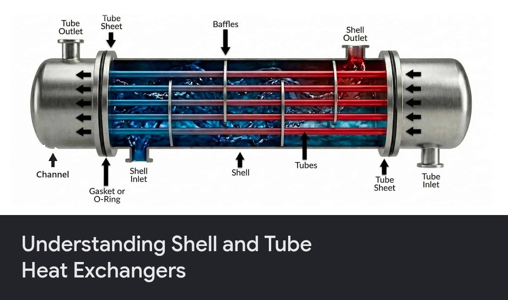
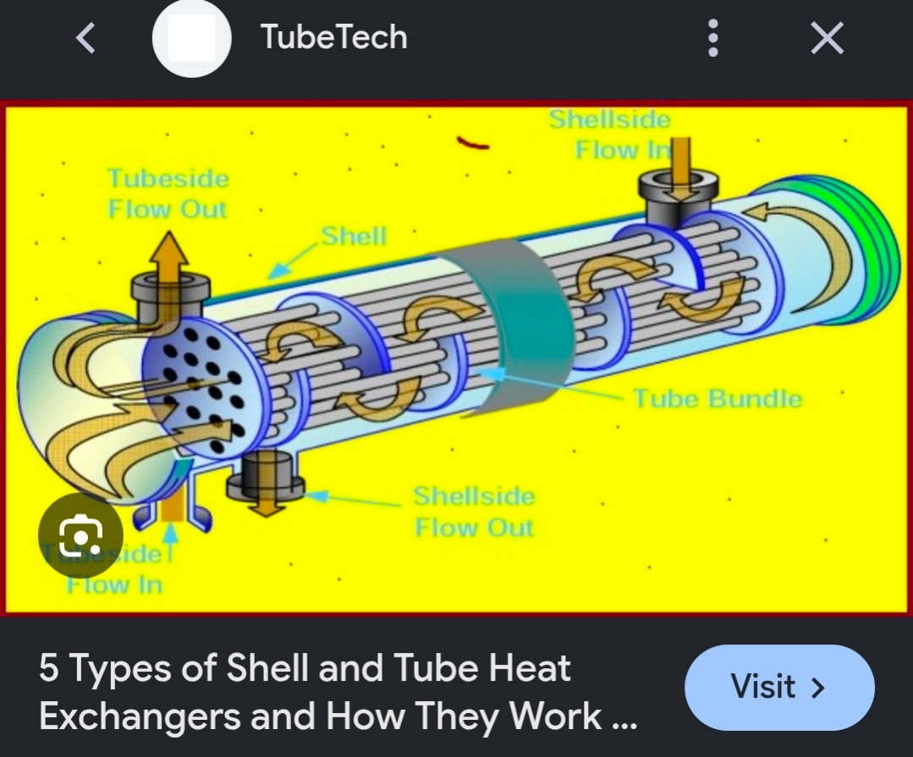

Documented Dragonfly Architecture
On Titan, fans distribute MMRTG waste heat and a cold-duct bypass controls cooling. In space, the cruise system uses a pumped fluid loop and radiators. Surface convection is not the same as vacuum heat rejection. NASA/APL thermal controller design (2023)
The surface loop circulates nitrogen-rich atmospheric gas, not liquid nitrogen. Cold gas, flow resistance and external wind affect heat transport. NASA's 2026 workshop abstract continues to describe fan-driven circulation, cold-duct trim and insulation, with coupled thermal and CFD analysis. 2026 Dragonfly thermal modeling abstract
The battery supports high flight loads while the MMRTG produces electricity day and night. A roughly 16-Earth-day rotation gives approximately eight days per half-cycle near the equator; actual illumination varies. NASA power system / Titan environment
The 2024 rotor study found strongest thrust fluctuations in steep descent, beyond 60 degrees and roughly 0.75-1.25 times hover induced speed. The advisory uses ground-relative descent as a proxy, not measured shaft-relative inflow, and does not simulate thrust loss. No trigger does not establish safe flight. Marshall et al., 2024
Exchanger references & evidence
Hypothetical liquid-to-liquid shell study
Independent of vehicle telemetry. Assumed single-phase fluids, no environmental heat loss, no pump power or freezing model. Effectiveness is an input, not a shell-geometry prediction or flight specification.
Tube hot inlet (C)
Shell cold inlet (C)
Tube flow x heat capacity (W/K)
Shell flow x heat capacity (W/K)
Assumed effectiveness (0-1)
Q = effectiveness x smaller heat-capacity rate x inlet temperature difference. Both outlet temperatures conserve that same heat flow. Coolant choice and phase limits need separate qualification. Heat-exchanger energy balance reference
Shell-and-tube exchangers separate two flowing fluids with tube walls; baffles guide shell-side flow. Fixed, floating-head and U-tube designs manage construction and expansion differently. These are general industrial principles, not confirmation of Dragonfly hardware or a flight efficiency rating. TubeTech source article
Fixed tube sheet Tube sheets welded to shell
Floating head Movable rear header; removable bundle
U-tube Free bend accommodates expansion
Multiple passes / baffles Alter flow and heat transfer A liquid-to-liquid shell is a reasonable conceptual option for separate coolant circuits. Its geometry alone does not specify coolant, pressure, freezing margin or performance. Nitrogen outside does not require nitrogen inside a sealed liquid circuit. Any such variant here would be an assumed design study, separate from the documented surface gas loop.
Complex coupled liquid loops do have spacecraft precedent: NASA describes interacting rover and cruise loops for Mars Science Laboratory. That supports the general concept, not a claim that Dragonfly uses the same hardware or fluids. NASA MMRTG heat-exchanger study

User-supplied general exchanger reference; not flight hardware. 
User-supplied TubeTech reference screenshot. Lockheed Martin identifies cruise-stage, aeroshell and integration work. Neither the linked material nor the public NASA/APL sources examined establishes the pictured exchanger as Dragonfly's flight design. Lockheed Martin / NASA integration update
Calm-weather overheating is a documented design concern. Claims of melting components or skids sinking into ice were not corroborated and are not modeled. NASA interview
Simulation limits & assumed parameters
The 2020/2023 thermal designs specify a 0-20 C landed battery band and a 35 C upper operating limit. Charging is inhibited below 0 C or at 35 C. Equipment-bay -20 to 55 C and 15% reserve are demo guards. Thermal nodes (60/30 kJ/K), battery losses, 8 W/K coupling and controller gains are assumptions. PCM buffering, detailed motor preheat and individual electronics temperatures are not resolved. APL lander thermal model, 2023
Convection interpolates between 4 W/m2/K calm, 10.5 at 1.6 m/s and 75 at 10 m/s. These are source-informed bounds, not a CFD correlation. Foam thickness 0.0762 m, cold conductivity 0.01 W/m/K and gas flow 0.052 kg/s come from the preliminary design; 20 m2 area and constant 1050 J/kg/K gas heat capacity are assumptions. Source-gas heat is balanced between bay circulation and an assumed external loss path. The cold duct closes in flight; landed commands use 0-40% airflow in 2% steps and a 600 s PI update. This is a simplified single controller, not the flight MIMO system.
Storage uses the 11.5 kWh pack reported in 2022; accessible capacity and reserve remain simplified. Estimated arrival generation is 90 W (or 70 W), declining 2.5% per Earth year; this is not a mission guarantee. Thermal output starts at 1,800 W and follows Pu-238 decay. 2022 design report / NASA MMRTG fact sheet
The flight-power estimate combines decreasing induced power with profile, drag and climb terms. Its drag area (0.65 m2), profile speed (55 m/s), efficiencies and wind correction are assumptions, not a measured flight curve. Three blades per rotor follow the lead rotor engineer's account; the ambiguous transcript RPM figure is not used. APL engineer interview, June 2026
GS Yuasa identifies supplied LSE134 cells as 134 Ah at 3.75 V nominal. Cell specifications alone do not establish the full pack topology or usable flight energy. Battery manufacturer
Hibernation compresses time only on dry ground. It pauses on thermal warnings. The mission's 30-second acquisition, fictional pool, landing protection and automatic guidance are gameplay abstractions, not real mission operations.